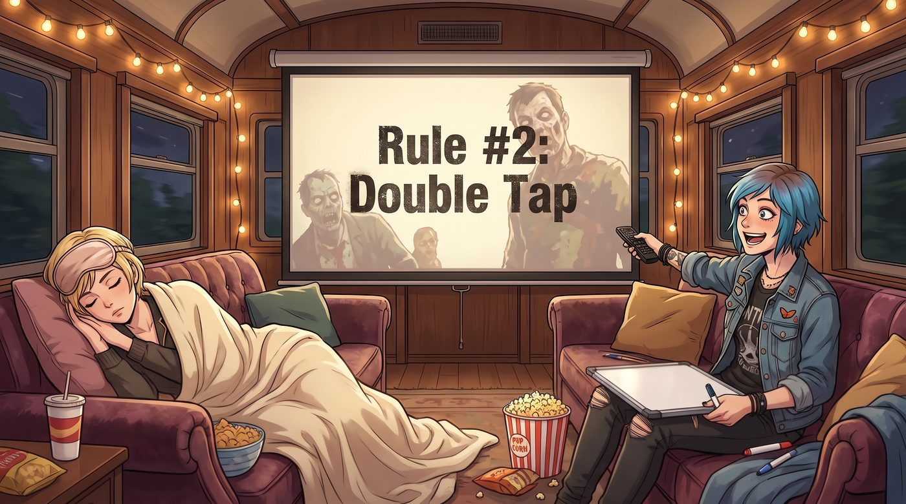
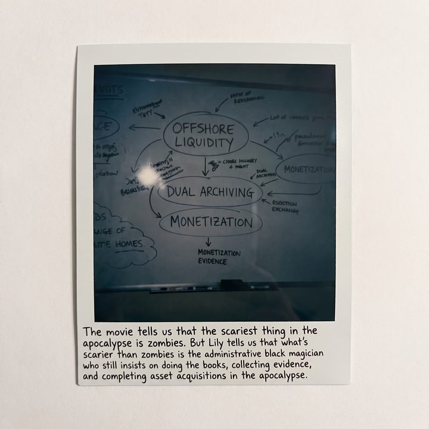

行政生存法則


二號車廂的電影之夜，在大螢幕前拉開帷幕。
螢幕上播放的是一部經典的喪屍喜劇片。當男主角之一正在超市裡用樂器狂砸喪屍的腦袋時，Victoria 已經在沙發的另一端睡死了。她戴著真絲眼罩，身上蓋著羊絨毛毯，完美屏蔽了這種充斥著血漿與低級血腥的B級片美學。
但沙發的另一邊，氣氛卻異常狂熱。
一、末日頭腦風暴
男主角 Columbus 那帶有嚴重強迫症、卻在末日裡異常實用的喪屍生存法則一條條在螢幕上彈出時，Chloe 的眼睛亮了。看到開頭那條關於保持體能、以及後面那條「補槍」原則時，她興奮地按下了暫停鍵，從茶几底下摸出一支白板筆和一塊平時用來記採購物資的白板。
「這小子雖然是個處男書呆子，但他的這套邏輯簡直太完美了！」Chloe 激動地揮舞著白板筆，「末日裡沒有法律，只有規則！我們二號車廂也必須有一套自己的末日生存手冊。來，開始頭腦風暴！」
Max 也是這部電影的死忠粉。作為一個喜歡在手帳上寫寫畫畫的觀察者，這種把混亂的世界條理化的行為精準地擊中了她的神經。「我喜歡『享受微小的美好』這條。」Max 咬著筆桿，認真地說，「末日裡很容易失去人性。所以我們的法則裡必須有一條：永遠為拍立得留一盒底片，或者不管多危險，也要好好吃一頓 Kate 做的餅乾。」
正在給 Victoria 的腿蓋毛毯的 Kate 聽了，溫柔地笑了：「那我提議加一條：吃罐頭前必須看保存期限，並且一定要洗手。腸胃炎在末日可是致命的。」
「太軟弱了！我們需要的是硬核的戰鬥法則！」Chloe 唰唰唰地在白板上寫字，字跡狂野：「二號車廂法則一：燃料就是上帝。法則二：瞄準膝蓋，然後才是頭。法則三：不要相信任何穿著西裝的活人！」
看著白板上逐漸成型的廢土生存指南，Chloe 滿意地拍了拍手。她覺得自己已經做好了在末日裡大殺四方的準備。
二、法務前瞻性
「Chloe 學姐。」
工作站後方，傳來了鍵盤停止敲擊的聲音。
Lily 轉過身，手裡端著那杯萬年不變的熱牛奶。她看著白板上那些充滿了血漿味和浪漫主義色彩的規則，輕輕推了推圓框眼鏡，眼神中透著一絲看著幼稚園小朋友塗鴉的悲憫。
「Columbus 的手冊，作為一本基礎的物理求生指南，確實勉強及格。」Lily 走到白板前，用無比平靜的語氣說道，「但在我看來，它缺乏了最核心的法務前瞻性與資產保全邏輯。這份手冊只能保證你們活下來，卻無法保證你們在人類文明重建後，不會面臨破產和無期徒刑。」
Chloe 愣住了：「人類文明都崩潰了，誰還管破產？！」
「人類文明也許會崩潰，但國稅局和保險公司的核算系統永遠不會。」Lily 從 Chloe 手裡抽出那支白板筆，用衣袖將 Chloe 寫的那些瞄準膝蓋的熱血法則全部擦掉，然後用極其端正、猶如印刷體一般的字跡，開始重新書寫。
三、離岸流動性
「真正的二號車廂行政生存法則，應該是這樣的。」
Lily 一邊寫，一邊用軟糯的聲音進行著令人毛骨悚然的解說：「Columbus 的第一條是保持體能，這太低效了。在二號車廂，法則一是：絕對的離岸流動性。跑得再快，也快不過銀行的擠兌。喪屍爆發的第一時間，不要去搶超市，立刻登入終端，將所有美元資產兌換成比特幣和瑞士不記名債券。當別人還在用罐頭換子彈時，我們將用數位貨幣買下整個安全區的基礎設施。」
Chloe 嚥了一口唾沫。
Lily 繼續寫下第二條。「補槍這個思路是對的，但執行層面太粗糙。我們的法則二是：雙重歸檔與免責取證。當妳用霰彈槍物理超渡了一個已經變成喪屍的鄰居時，請務必開兩槍：一槍打頭，另一槍按下相機快門。妳必須留下影像證據，證明他未經授權非法侵入私人領地，且具有明確的致命傳染威脅。否則，十年後秩序恢復，他的家屬依然可以請律師告妳防衛過當，讓妳賠得傾家蕩產。」
Max 默默地看了看手裡的寶麗來相機，突然覺得這台相機的責任變得無比沉重，它不再是記錄美好的工具，而是末日法庭上的呈堂證供。
四、將美好變現
「至於妳剛才提到的享受微小的美好……」Lily 轉過頭，給了 Max 一個極度純潔的微笑，然後在白板上重重地寫下最後一條：
「在資本的語境裡，這叫作：將微小的美好變現。」Lily 推了推眼鏡，鏡片反射著螢幕的冷光：「當妳在廢墟裡找到這座城市最後一盒奶油夾心蛋糕時，千萬不要自己吃掉。妳應該找到一個懷念精緻加工零食懷念到快發瘋、但擁有末日避難所產權的富豪，用這盒蛋糕換取他避難所百分之五十一的絕對控股權。利用極端環境下的物資稀缺性進行降維收割，這才是末日生存的終極浪漫。」
「說得好……」沙發上，原本睡著的 Victoria 突然幽幽地開口了。她根本沒摘下眼罩，只是精準地舉起了一隻手，在半空中優雅地打了個響指：「Lily，明天把這條寫進我的家族信託災備預案裡。這個槓桿收購模型，我喜歡這個概念。」
五、比喪屍更可怕
白板前，Chloe 已經徹底石化了。
她原本以為自己幻想中的末日已經夠殘酷了——爆頭、逃亡、血肉橫飛。但她萬萬沒想到，在 Lily 的這套行政生存法則裡，喪屍根本不是威脅。真正的威脅，是這個在末日裡一邊爆你的頭，一邊還要給妳拍照取證，最後還要用一塊小蛋糕騙走妳房產證的行政合法吸血鬼。
「實習生……」Chloe 聲音顫抖地指著白板，「我突然覺得……如果真的有喪屍爆發，喪屍看到妳這套規則，可能會嚇得自己找個墳墓重新躺回去。」
「行政與資本的力量，本來就凌駕於碳基生物的本能之上，學姐。」Lily 乖巧地將白板筆蓋好，端起熱牛奶喝了一口，「而且，按照我的規則，如果喪屍重新躺回墳墓，我們還可以向政府申請主動減少碳排放與生物污染的環保補貼呢。」
Max 舉起寶麗來，對著那塊寫滿了離岸流動性、雙重歸檔和變現的白板，按下了快門。
照片吐了出來。Max 在照片的留白處，用發抖的手寫下了一行字：
『電影告訴我們，末日裡最可怕的是喪屍。但 Lily 告訴我們，比喪屍更可怕的，是在末日裡依然堅持做帳、取證並完成資產併購的行政黑魔法師。』